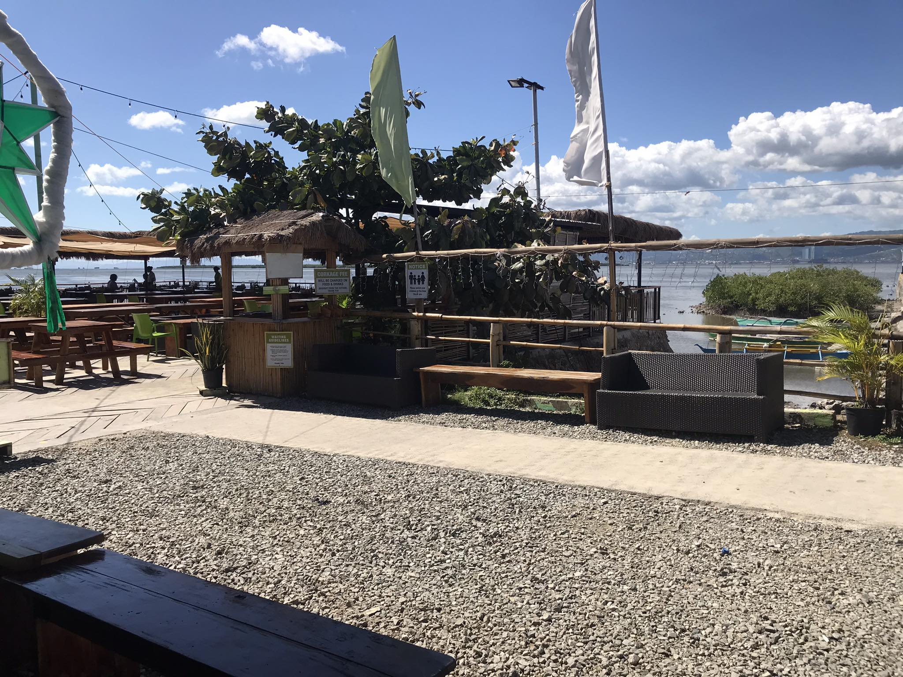
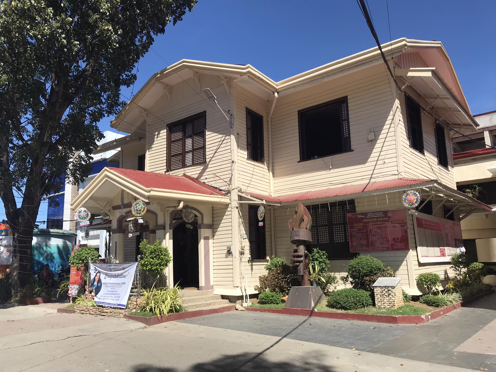

Discovering the Sacred Legacy of San Roque Parish in Cordova,
Cebu
BY: Ryan Jay G. Miano
Step into the vibrant embrace of Cordova, Cebu, where the echoes of
history intertwine harmoniously with the rhythmic pulse of
contemporary development and the tightly woven threads of community
spirit. In this blog, I take you on a captivating
...exploration of our proud municipality—a locale where history,
community bonds, and progress seamlessly converge, creating a
unique narrative that defines Cordova.
10, 00 Roses: Where Artificial Elegance Meets Natural Splendor in
Cordova, Cebu
BY: Jaymar A. Tiro
Welcome to the captivating realm of 10,000 Roses Café & More, an
establishment that has swiftly become the talk of the town in Cebu.
With its Korean-inspired charm and unique allure, this café has not
only piqued the ...has also emerged as a sought-after destination, generating a buzz
that resonates across various social media platforms.
Bakasihan: Unveiling the Treasures of Cordova, Cebu
BY: Lurenz B. Arain
Welcome to a flavorful expedition through the charming fishing
community of Buwagsong in Cordova, where the culinary spotlight
shines on the esteemed bakasi. In the midst of Cordova's tidal
flats, characterized by mud and grass, the ...bakasi thrives abundantly, becoming a beloved symbol in the local
cuisine.

Charms of Lantaw Native Restaurant: An Expedition into Culinary
Delights
BY: Kenneth S. Obrador
Hello, fellow enthusiasts of travel and gastronomy! I am thrilled to
share an exquisite discovery that seamlessly marries breathtaking
views with delectable flavors—welcome to Lantaw Native Restaurant in
the heart of Cordova, Cebu. ...Tucked conveniently in Cordova, Lantaw serves as a welcoming
escape from the hustle and bustle of Cebu City, making it a
must-visit for locals seeking culinary adventures and travelers
exploring the rich offerings of the area.

Navigating Cordova's Narrative: Chronicles of Harmony in History,
Community, and Progress
BY: Vincent N. Tajanlangit
Step into the vibrant embrace of Cordova, Cebu, where the echoes of
history intertwine harmoniously with the rhythmic pulse of
contemporary development and the tightly woven threads of community
spirit. In this blog, I take you on a...captivating exploration of our proud municipality—a locale where
history, community bonds, and progress seamlessly converge,
creating a unique narrative that defines Cordova.
Festive Glow: Beyond Decorations, Filipino Schools Ignite the
Christmas Spirit Through Tradition
BY: Jessa Mae V. Jumao-as
As the cool breeze ushers in the month of December, a magical
transformation takes place across the Philippines. From Luzon to
Mindanao, schools become vibrant canvases of light and color, as 0
educators and students join hands in designing their insti...tutions to embrace the warmth and joy of the Christmas
season.